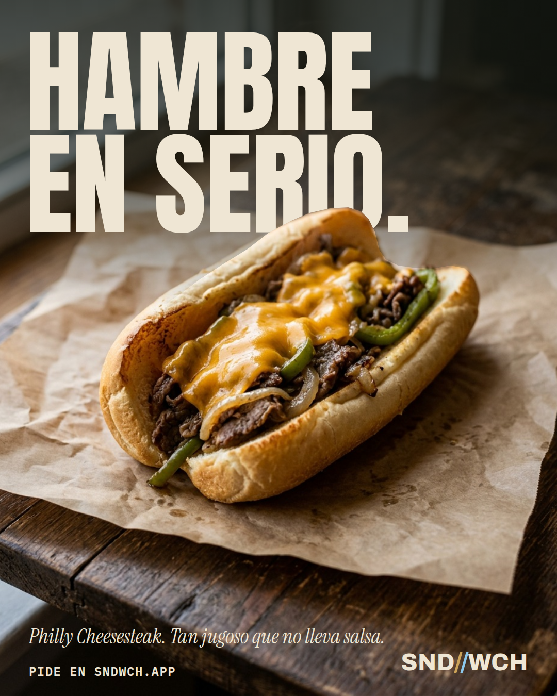
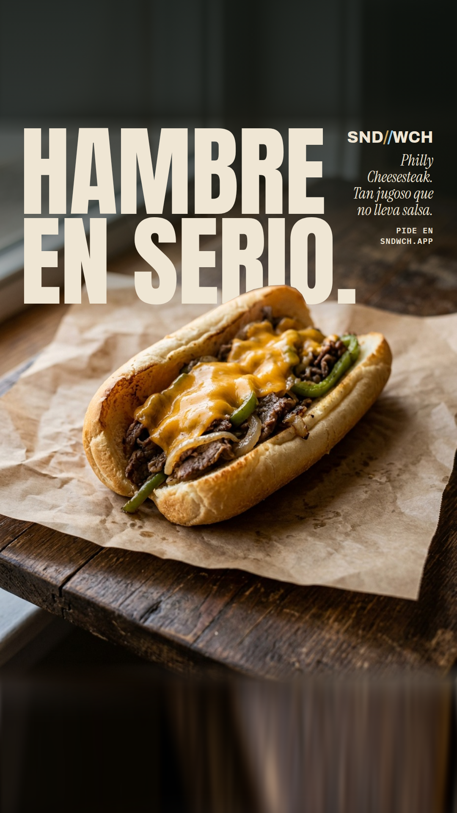
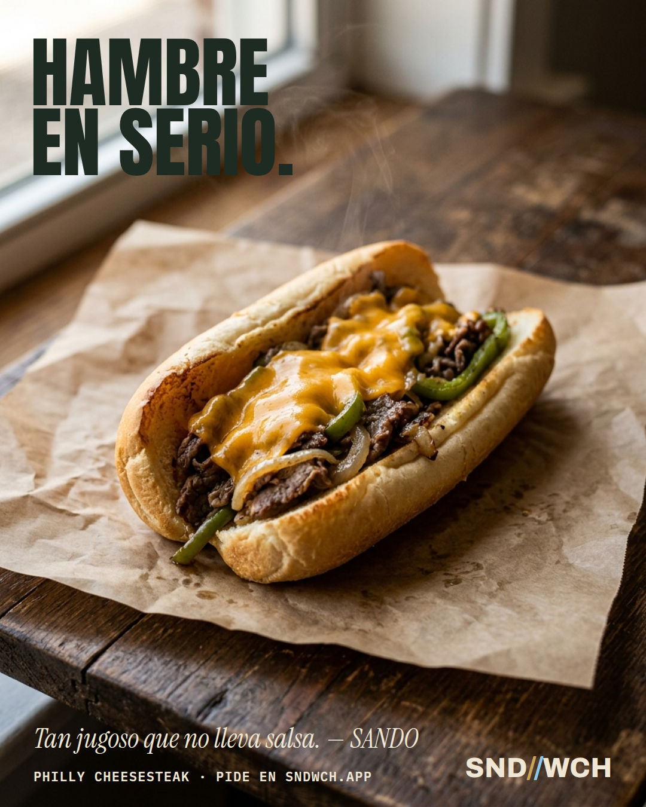
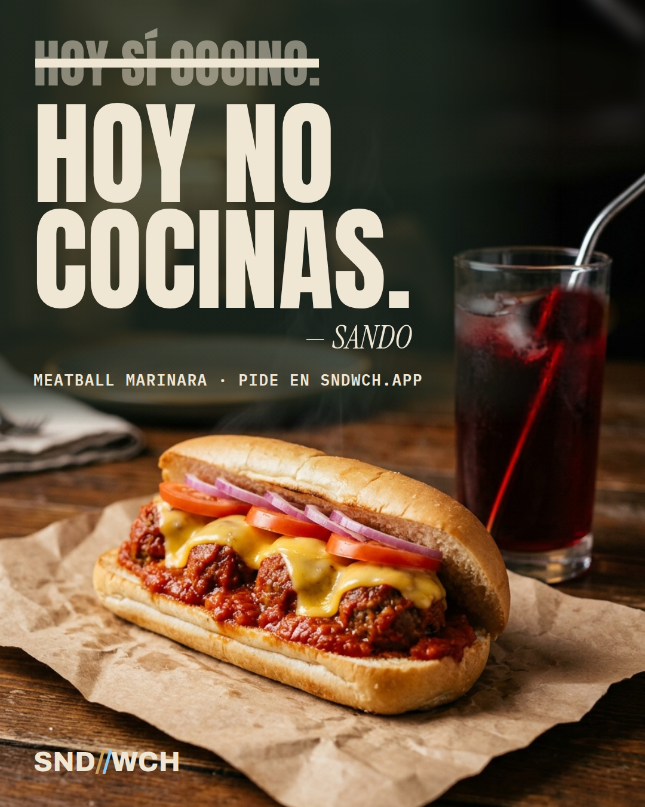
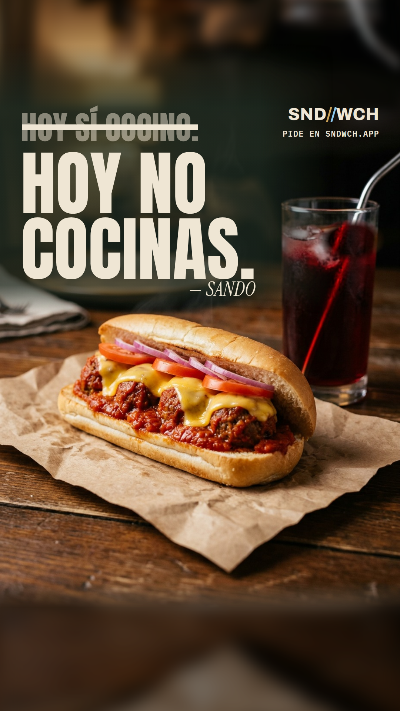
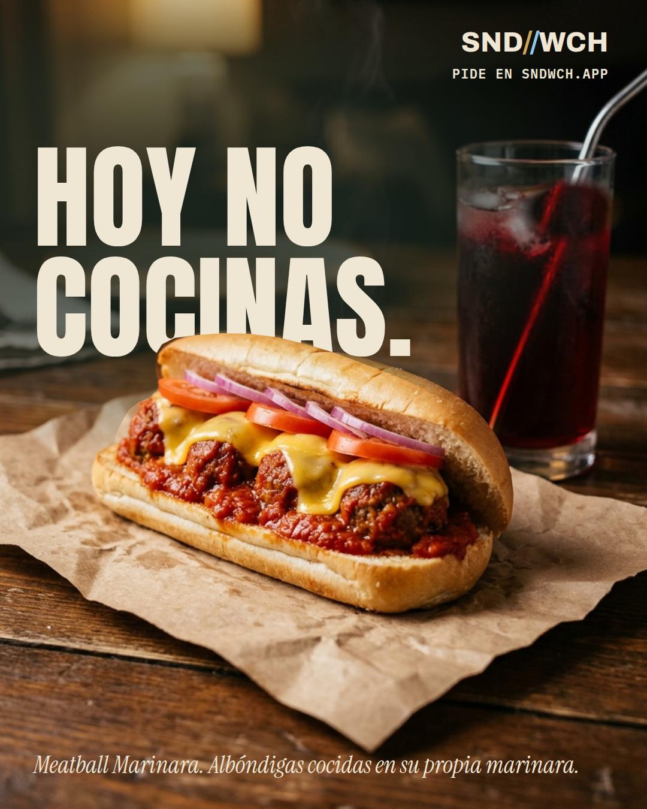
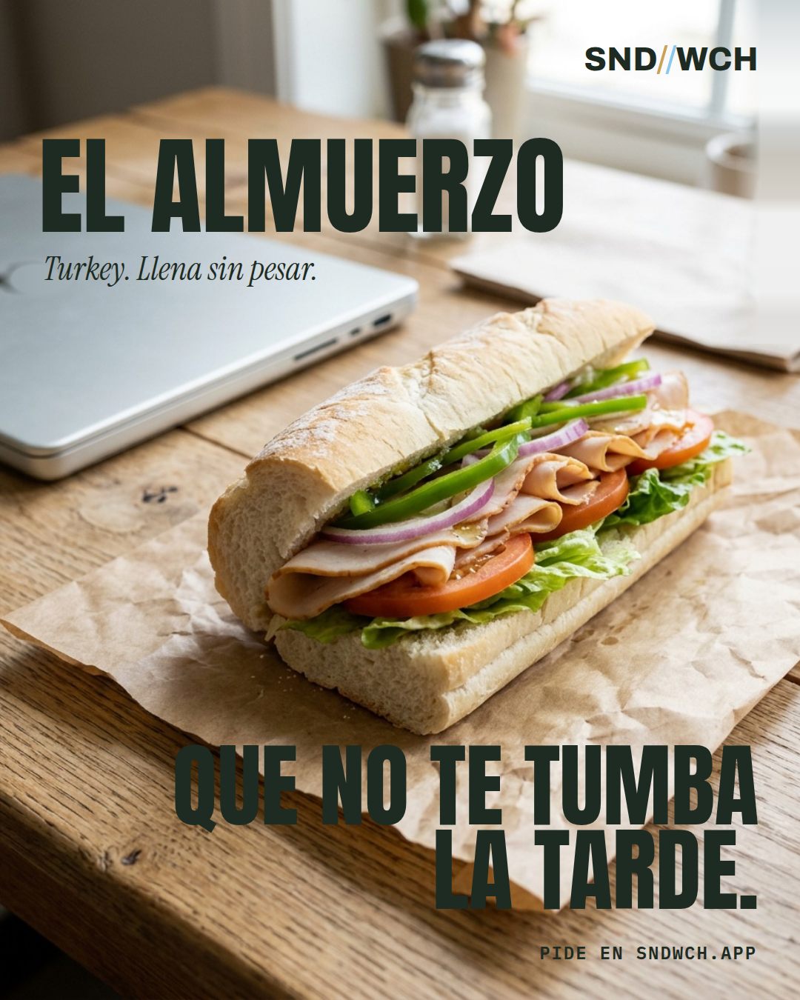
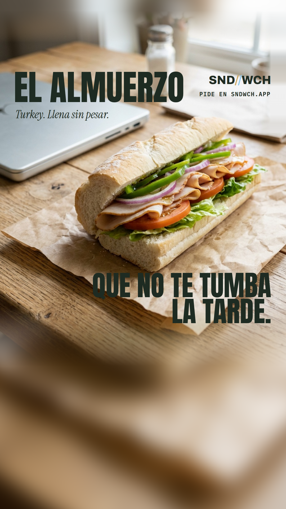
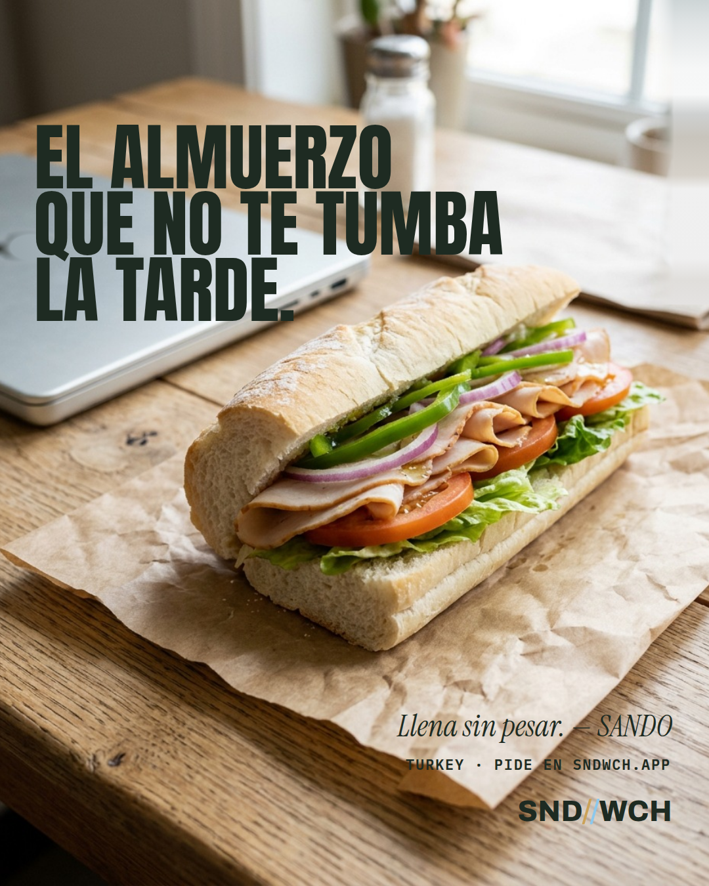

Puerta 1 · elige un concepto por anuncio
La idea y la foto ya las aprobaste. Esto es cómo se cuenta, sin franja.
Philly«Hambre en serio.»RECOMENDADO A · DETRÁS DEL PAN: el titular gigante y el pan delante, tapándole el pie.
ALTERNATIVA C · LA VENTANA: sobria, titular en la luz.

A · FEED 4:5

A · HISTORIAS Y REELS 9:16

C · ALTERNATIVAMeatball«Hoy no cocinas.»RECOMENDADO A · HOY SÍ COCINO: lo que te dijiste en la mañana, tachado por SANDO.
ALTERNATIVA B · DETRÁS DEL PAN (la mejor imagen sola, pero repite el recurso del Philly).

A · FEED 4:5

A · HISTORIAS Y REELS 9:16

B · ALTERNATIVATurkey«El almuerzo que no te tumba la tarde.»RECOMENDADO A · LA FRASE QUE DURA LA TARDE: el sándwich parte la frase; luz de mediodía, sin velo.
ALTERNATIVA B · TINTA AL MEDIODÍA: las tres líneas arriba.

A · FEED 4:5

A · HISTORIAS Y REELS 9:16

B · ALTERNATIVA